Module 2 · Formation AKUU
Histoire & Archéologie
de l'Amazonie
Source : J.V. San Román, Perfiles Históricos de la Amazonía Peruana, CETA-CAAAP-IIAP, 1994
Plan du module
Sommaire
01Qui vivait en Amazonie ?
Les peuples originaires, sociétés et cosmovisions avant 1542
02Les Missions et Conquêtes
Orellana, jésuites et franciscains — contact, réductions, résistances
03L'Ère du Caoutchouc
Boom du latex (1880–1914) — fortunes, esclavage et violence
04L'Amazonie contemporaine
Intégration nationale, pétrole, coca et mouvements indigènes
05Archéologie de l'Amazonie
Terra preta, géoglyphes — une forêt façonnée de longue date
01
Partie 01
Qui vivait en Amazonie ?
Les peuples originaires · Napo & Amazone · Avant 1542
01 · Qui vivait en Amazonie
Chronologie : 7 grandes étapes
I
jusqu'en 1542
Période indigène
400+ nations, chasse-pêche-cueillette, cultures millénaires
II
1542–1769
Pénétration missionnaire
Orellana, jésuites, franciscains — réductions, résistance
III
1769–1880
Naissance du capitalisme
Expulsion jésuite, indépendance, commerce fluvial
IV
1880–1914
Époque du caoutchouc
Boom du latex, esclavage, fortune et violence
V
1914–1943
Récession économique
Effondrement du caoutchouc, conflits frontaliers
VI
1943–1970
Intégration nationale
Routes, industrialisation, présence de l'État
VII
1970–1990
Pétrole, coca et violence
Extraction, narcotrafic, mouvements indigènes
Source : J.V. San Román, Perfiles Históricos de la Amazonía Peruana, 1994
01 · Qui vivait en Amazonie
+400 nations : une mosaïque millénaire
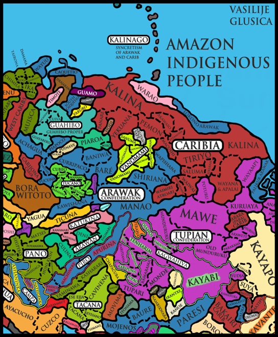
« L'Amazonie est une mosaïque formée d'environ 400 groupes humains et leurs cultures correspondantes. »
Ier Encuentro de Pastoral de Misiones en el Alto Amazonas, Iquitos, 1971
Langues multiplesGroupes indépendants, souvent en guerre, parlant des langues distinctes — impossible à classifier en une seule entité.
Identité par le fleuveChaque tribu portait le nom de son chef (curaca), de sa rivière ou de son animal totem — pas de notion d'ethnie générique.
Vie disperséeRancherías de 40 à 500 personnes, semi-nomades, réparties sur des territoires immenses — lien fort à la maloca.
Des liens malgré les conflitsAlliances commerciales, mariages inter-tribus, fêtes communes — la guerre cohabitait avec la diplomatie.
01 · Qui vivait en Amazonie
Société, autorité et économie des tribus
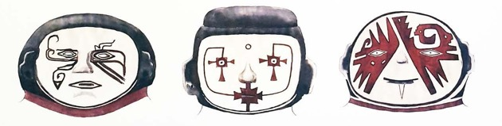
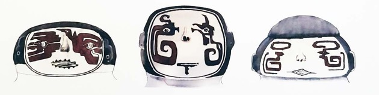
Motifs de peinture faciale et masques — marqueurs d'identité et de statut au sein des rancherías.
FAMILLE
La ranchería, cellule de base40 à 500 personnes liées par la parenté. Vie dans la maloca. Semi-nomadisme dicté par la chasse, la pêche et les saisons.
AUTORITÉ
Le curaca, le prestigeChef charismatique dont l'autorité repose sur le prestige et l'expérience, non la coercition. Pouvoir fragile, contesté si jugé injuste.
ÉCONOMIE
Pêche, cueillette, chasseÉconomie collectiviste. Chacra de yuca et maïs pour la chicha. Poison barbasco pour la pêche. Redistribution systématique.
GUERRE
Guerre & défenseConflits inter-tribaux pour le territoire, les femmes, le prestige. Le guerrier est l'idéal masculin. Prise de captifs intégrés.
01 · Qui vivait en Amazonie
Cosmovisión et vie quotidienne
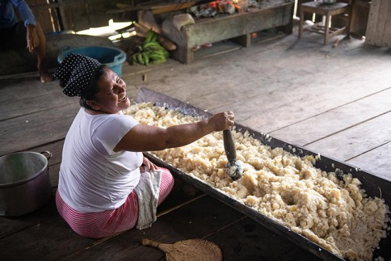
« La selva vive su tiempo de cultura mítica, de rasgo lunar. Es una cosmovisión mágico-religiosa pannaturalista. »
J.V. San Román, Perfiles Históricos, 1994
Animisme & chamanismeChaque animal porte une force vitale. Le chaman est l'intermédiaire entre monde visible et invisible : il soigne, prédit, protège.
La fête comme lien socialFiestas (victoire, mariage, initiation) : tous participent. Le masato (yuca fermentée) est universel. La fête = réconciliation.
Éducation par la libertéL'enfant apprend en vivant la forêt. Il accompagne les adultes à la chasse. Les rites d'initiation marquent le passage à l'âge adulte.
Une forêt habitée, pas sauvageLa selva n'est pas un obstacle mais un partenaire. Savoir fin des plantes, des animaux, des cycles — transmis oralement.
01 · Qui vivait en Amazonie
La nation des Encabellados — maîtres du Napo
TerritoireDe la cordillère de Quito à la boca del Putumayo, couvrant tout le bassin du Napo et ses affluents (Aguarico, Cuyabeno, Necoya…).
Réputation guerrièreConnus pour leur caractère « aguerri et indépendant » — premiers à résister avec ténacité à la présence espagnole dans la selva.
Nom & identité« Encabellados » = ceux qui portent les cheveux longs en tresses — aujourd'hui les Piojes / Secoyas (héritiers directs).
Contact missionnaireP. Rafael Ferrer fonde 3 pueblos en 1604 chez les Cofanes voisins. Assassiné en 1611 — vu comme espion par les chamanes.
01 · Qui vivait en Amazonie
Les Omaguas — « seigneurs des îles »
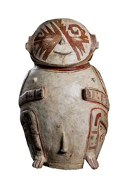
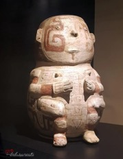
15 000
recensés en 1645 (P. Cujía)
33
pueblos par P. Fritz (1686–89)
Emplacement stratégiqueLes îles du bas Amazone entre la boca del Napo et l'Ampiyacu — position dominante sur le commerce fluvial.
Céramique & artisanatSelon Carvajal (1542) : « loza de la mejor que se ha visto en el mundo » — renommée dans toute la région.
Tête aplatiePratique culturelle distinctive : crânes allongés par compression à la naissance, signe de prestige social.
Destruction portugaiseEn 1710, une armada de 1500 soldats du Pará détruit les 40 pueblos du P. Fritz — fin de la nation Omagua organisée.
01 · Qui vivait en Amazonie
Les Kukama-Kukamiria — identité, territoire et langue
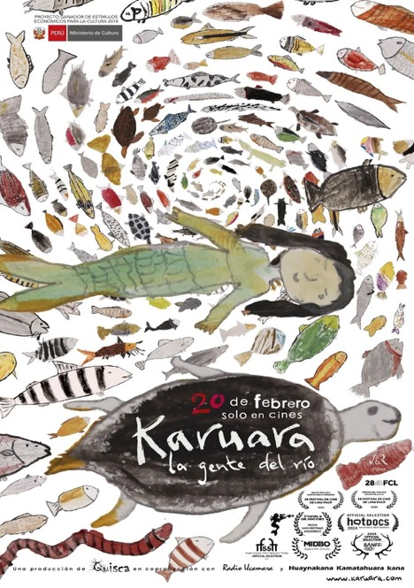
~15 000
personnes — recensement 2017, Loreto
Tupi
seule langue tupi hors du Brésil
Un peuple des grands fleuvesRives du Marañón, Huallaga, Ucayali et de l'Amazone supérieur (Loreto). Peuple amphibie : vie sociale et spirituelle organisée autour du fleuve.
Une langue quasi éteinte, renaissanteUnique branche tupienne hors Brésil. Moins de 1 500 locuteurs, mais un mouvement de revitalisation actif depuis les années 2010.
Cosmologie fluvialeTrois mondes superposés : terrestre, souterrain (tunchis, bufeo colorado) et aquatique. Le fleuve est un espace social habité.
Pêche, agriculture, cueillettePêche de subsistance (paiche, gamitana, boquichico), agriculture sur brûlis (yuca, maïs). Des gens d'eau avant tout.
01 · Qui vivait en Amazonie
Colonisation, missions et caoutchouc — la décimation kukama
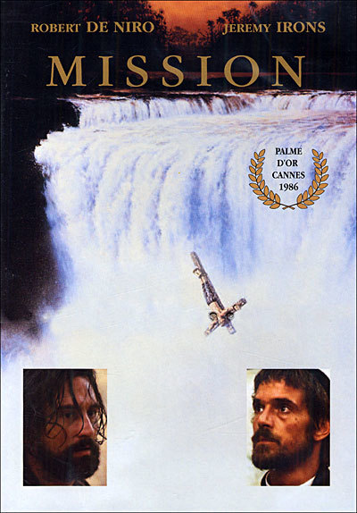
« Nos parents ont honte de nous apprendre le kukama. Les missionnaires disaient que notre langue était la langue du démon. »
Témoignage d'une aînée kukama, ACODECOSPAT (2012)
Les réductions jésuites (XVIIᵉ–XVIIIᵉ)Regroupement forcé sur le Marañón et le Huallaga. Les épidémies (variole, grippe, rougeole) provoquent un effondrement de plus de 80 %.
Le boom du caoutchouc (1880–1920)Les Kukama réduits au peonaje (esclavage par dette). Fuites, désorganisation sociale profonde, savoirs partiellement perdus.
L'acculturation forcéeL'école publique impose l'espagnol et stigmatise le kukama comme « langue de sauvages ». En 1980, la langue est proche de l'extinction.
Entre stigmate et re-appropriationLongtemps déclarés « mestizos » pour échapper à la discrimination. Depuis 1990, un puissant mouvement de re-appropriation identitaire.
01 · Qui vivait en Amazonie
Le pétrole et le Marañón — 50 ans de pollution
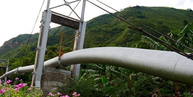
+190
déversements depuis 1974 (OCP)
500 km
de fleuve contaminé
L'oléoduc Norperuano (OCP)Construit en 1974 par Petroperú, il traverse le territoire kukama sur +1 000 km. +190 déversements — un tous les 2,5 mois en moyenne.
Lote 192 — le plus controverséPlus grand champ pétrolier actif du Pérou. Taux anormaux de plomb, cadmium et baryum chez les communautés kukama et achuar.
Impact sanitaireÉtude Minsa 2016 : 98 % des enfants kukama testés dépassent les seuils OMS en métaux lourds. La pêche contaminée reste la seule option.
Lenteur et impunitéRemédiations lentes ou inexistantes. L'État péruvien condamné en 2023 par la Cour Interaméricaine des Droits de l'Homme.
01 · Qui vivait en Amazonie
Guardianes del agua — l'activisme kukama
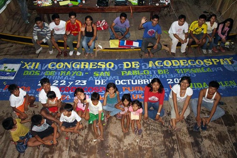
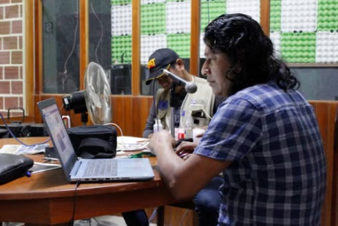
« Le Marañón est notre mère. Maintenant c'est nous qui devons le défendre. Nous sommes ses gardiens. »
Elena Valera Mori, dirigeante kukama, ACODECOSPAT (2015)
ACODECOSPATPrincipale organisation kukama. Documente les déversements, accompagne les recours juridiques et porte les demandes de consultation préalable (CLPE).
Elena Valera MoriVoix internationale des peuples fluviaux. A porté le cas kukama devant l'ONU, la CIDH et les médias internationaux.
« La Voz de la Selva »Radio communautaire et éducation interculturelle bilingue (EIB) transmettent le kukama et les savoirs ancestraux aux jeunes.
Alliances régionalesCoalitions avec Achuar, Wampis : personnalité juridique du fleuve, moratoire pétrolier, application stricte du CLPE.
01 · Qui vivait en Amazonie
Le Marañón, sujet de droit
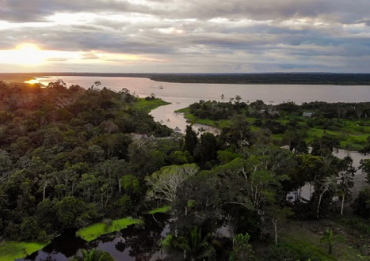
2021
arrêt de la Cour de Loreto — droits du Marañón
CIDH
condamnation du Pérou en 2023
L'arrêt de Loreto (2021)Le Marañón reconnu « sujet de droits » : droit à l'existence, à la régénération et à la restauration. Une première péruvienne.
Un modèle globalAprès l'Équateur (Pachamama, 2008), le Whanganui (N.-Zélande, 2017) et l'Atrato (Colombie, 2016) : les fleuves reçoivent une personnalité juridique.
Extraction vs conservationLe Marañón traverse de nombreux blocs pétroliers. Les Kukama demandent un moratoire et l'application du CLPE.
Espoir et fragilitéL'arrêt reste partiellement inapplicable faute de mécanismes d'exécution. Mais un précédent juridique majeur est créé.
02
Partie 02
La Conquête et les Missions
« Las primeras noticias del río Amazonas han sido proporcionadas por la expedición de Gonzalo Pizarro »
— J.V. San Román, 1994
02 · La Conquête et les Missions
Francisco de Orellana — la première traversée (1541–1542)
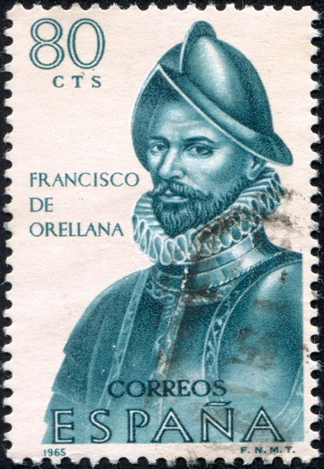
1541–42
1re traversée — 8 mois du Napo à l'Atlantique
57
hommes au départ du Napo
La séparation d'avec PizarroEnvoyé en avant-garde (déc. 1541) chercher des vivres, le courant l'empêche de remonter. Il continue vers l'est — Pizarro le dit déserteur.
La navigationL'équipe construit le « San Pedro », descend le Napo puis le grand fleuve. Orellana apprend plusieurs langues — clé de survie.
Gaspar de CarvajalLe dominicain rédige la « Relación » (1542) : première description de l'Amazonie — indispensable mais partiale.
Arrivée à l'Atlantique (août 1542)Puis Cubagua (Venezuela). Orellana repart en Espagne, revient et meurt en 1546 dans le delta, sans coloniser la région.
02 · La Conquête et les Missions
La Relación de Carvajal — témoignage, mémoire et mythe
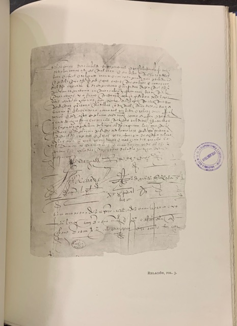
« Et nous avons vu des cités qui brillaient de blancheur, et d'innombrables gens sur les rives — des milliers. »
Gaspar de Carvajal, Relación del nuevo descubrimiento… (1542)
Des rives densément peupléesVillages contigus sur des centaines de km, marchés, routes. L'archéologie (terra preta, LIDAR) valide l'essentiel.
Omagua, Aparia, MachiparoLes Omagua décrits comme la nation la plus évoluée : céramique fine, coton, grandes maisons. Décimés avant la fin du XVIIᵉ s.
Les « Amazones »Carvajal dit avoir vu des femmes combattre — d'où le nom du fleuve. Probable confusion (guerriers aux cheveux longs) ou invention.
Source et piègeSeule source primaire de 1542. Longtemps négligée, réévaluée depuis 1990 : villes denses confirmées, Amazones non.
02 · La Conquête et les Missions
Pedro de Ursúa — l'expédition d'El Dorado (1559–1561)
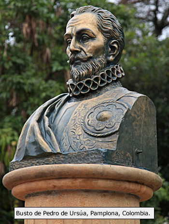
1559
départ de Moyobamba (Pérou)
+300
hommes, femmes et enfants
Mandat royalLe vice-roi confie à Ursúa la découverte d'« El Dorado ». Objectif réel : éloigner les conquistadors sans emploi, dangereux pour l'ordre colonial.
Départ et navigationDescente du Huallaga, puis Ucayali et Amazone. Ursúa emmène sa maîtresse, Doña Inés — décision critiquée. Vivres et tensions.
Le déclin de l'autoritéSans or, la faim et les maladies. Le 1ᵉʳ janvier 1561, Ursúa est assassiné dans son hamac, complot de Lope de Aguirre et Guzmán.
SourcesTrois chroniques (Vázquez, Monguía, Zúñiga). San Román (1994) et Hemming (2008) en font la synthèse la plus fiable.
02 · La Conquête et les Missions
Lope de Aguirre — la mutinerie et « El Tirano » (1561)
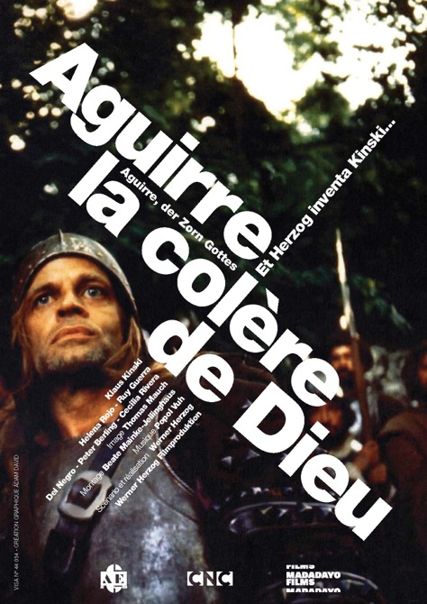
« Moi, Lope de Aguirre… je me dénaturalise de l'Espagne et te déclare la guerre la plus cruelle que nos forces pourront soutenir. »
Lettre à Felipe II, 1561 — unique document autographe conservé
La prise de pouvoirGuzmán proclamé « Prince du Pérou », puis assassiné par Aguirre pour régner seul. La terreur commence à bord.
Violence de masseDe l'Amazone à l'Orénoque jusqu'à Margarita. ~70 personnes exécutées sur 300 — Espagnols, métis, indigènes suspectés de trahison.
La lettre à Felipe IIRenonciation à son allégeance, rage politique réelle, écriture brutale et puissante. Document exceptionnel.
Mort à Barquisimeto (oct. 1561)Abandonné par ses hommes, il tue sa propre fille puis est exécuté le 27 octobre 1561. Son corps est démembré.
02 · La Conquête et les Missions
Les missions jésuites — réseau et organisation (1604–1769)
165 ans
de présence jésuite
40 000+
indigènes « réduits »
Le système des « réductions »Regroupement forcé en pueblos organisés — plan en damier, église centrale, travail agricole. Rupture radicale du mode de vie.
Évangélisation par la langueQuechua (lingua franca) et langues locales. Grammaires et catéchismes en Omagua, Tupinambá, Iquito.
Figures clésP. Ferrer (1604), P. Cujía (1645), P. Samuel Fritz (cartographe), P. Maroni — bilingues et défenseurs contre les esclavagistes.
Conflits avec le Brésil portugaisBandeirantes attaquent les missions Omagua. 1710 : destruction de 40 pueblos du P. Fritz par 1500 soldats du Pará.
02 · La Conquête et les Missions
Le P. Samuel Fritz — cartographe de l'Amazonie
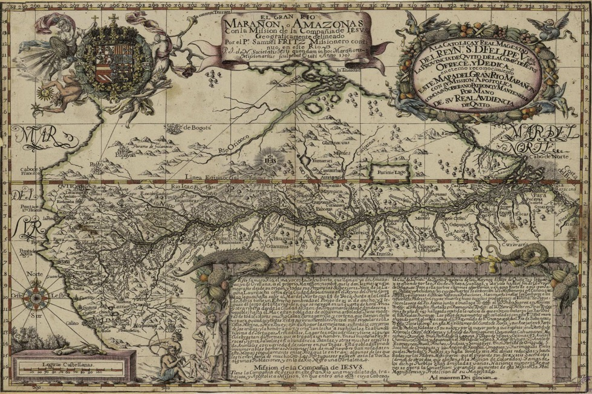
1654–1725
jésuite de Bohême, au Pérou dès 1685
20 ans
dans les missions Omagua
1691
1ère carte précise du fleuve, à Lima
HéritageSa carte « El Gran Río Marañón o Amazonas », basée sur 5 ans de navigation, resta la référence officielle pendant plus d'un siècle. Elle délimitait les frontières hispano-portugaises et fut copiée partout en Europe.
02 · La Conquête et les Missions
Les Franciscains & la fin des missions — l'expulsion de 1769
FRANCISCAINS
Mission dans la Montaña (haute selva)Approche plus coercitive que les jésuites — escorte militaire fréquente. Zones : Ucayali, Huallaga, Pachitea. Fr. Manuel Biedma martyrisé en 1687 par les Cashibos. Baptême rapide, évangélisation en espagnol.
RÉSISTANCE INDIGÈNE
Résistances armées & fuites en forêtSoulèvements : Encabellados (1635, 1666), Omaguas (1709), Lamas (1755). La forêt sert de refuge. Missionnaires tués : P. Ferrer (1611), Fr. Biedma (1687), P. Richter (1695).
L'EXPULSION DES JÉSUITES — 1769 · ROI CARLOS III D'ESPAGNE
1767
Décret royal : expulsion des jésuites de tous les territoires espagnols
1769
Départ forcé des derniers jésuites d'Amazonie péruvienne
1770s
Effondrement du réseau : missions abandonnées, indigènes dispersés
1780s
Tentatives franciscaines de reprise — résultats limités
03
Partie 03
L'Ère du Caoutchouc
« El caucho fue la maldición de la Amazonia — riqueza para unos pocos, esclavitud y muerte para los pueblos del bosque. »
— J.V. San Román, 1994
03 · L'Ère du Caoutchouc
Le boom du caoutchouc — fortune et terreur (1880–1914)
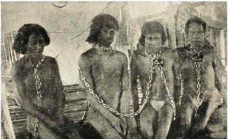
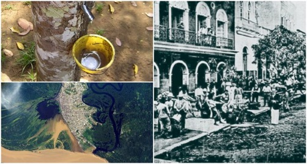
34 ans
durée du boom (1880–1914)
90 %
du caoutchouc mondial vers 1900
40 000+
morts/déplacés au Putumayo (1900–10)
La demande industriellePneumatiques Dunlop (1888), automobile Ford (1908) : le Hevea brasiliensis devient l'or noir du siècle.
Iquitos, capitale du boomDe 2 000 (1870) à 20 000 habitants (1900). Opéra, Casa de Fierro (Eiffel), bateaux à vapeur, champagne de Paris.
Le système de l'habilitaciónCrédit-dette qui piège les indigènes : avance en marchandises remboursable en caoutchouc — servitude légalisée.
L'effondrement de 1912Henry Wickham avait sorti des graines en 1876 : les plantations de Malaisie, moins chères, ruinent l'Amazonie en 2 ans.
03 · L'Ère du Caoutchouc
Julio César Arana — l'empire du Putumayo
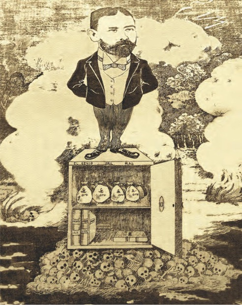
1864–1952
né à Rioja, mort à Lima
12 M km²
contrôlés (Putumayo + Caquetá)
Peruvian Amazon CompanyLa Casa Arana reconvertie en société à Londres (1907) : actionnaires britanniques, siège en Angleterre pour éviter la justice péruvienne.
Méthodes d'exploitationEstaciones aux quotas par famille Huitoto. Non-atteinte = mutilation, flagellation, meurtre. Terreur systématique documentée.
Le scandale Casement (1911)Le consul britannique enquête : la « Blue Book » expose 30 000 Huitotos réduits à ~10 000 en 10 ans. Arana jamais condamné.
Fin de l'impunité — relativeProcès de La Chorrera (1911) : quelques contremaîtres condamnés, vite libérés. Arana élu sénateur en 1919.
Illustration de Julio César Arana publiée par le journal « La Felpa » en 1908
03 · L'Ère du Caoutchouc
Les atrocités du Putumayo — l'esclavage en chiffres
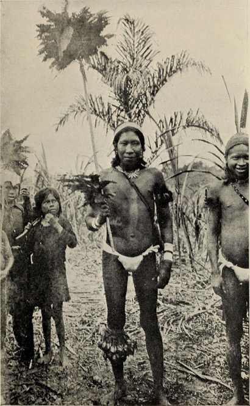
4 000 t
de caoutchouc 1900–10
« The Indian has been robbed, beaten, killed, and his family enslaved, in order to enrich those who called themselves masters of the Putumayo. »
Roger Casement, Blue Book, rapport au Parlement britannique, 1912
Le « cepo »Pilori standard : indigène enchaîné et fouetté devant sa communauté pour quota non atteint. Documenté avec noms.
L'assassinat « motivant »Exécutions exemplaires : fusillades, noyades, maisons brûlées avec les familles. Concours entre sections.
Le vol des femmesServantes forcées à Iquitos, enfants « domestiques ». Destruction des structures familiales Huitoto.
Peuple Witoto / Huitoto en 1913
03 · L'Ère du Caoutchouc
Iquitos — la ville du caoutchouc
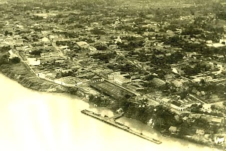
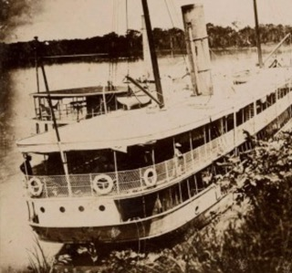
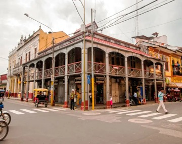
ARCHITECTURE
La Casa de Hierro & les azulejosStructure en fer de Gustave Eiffel (Paris 1889), façades d'azulejos portugais. Hôtels, théâtres, opéra — luxe tropical absurde.
DÉMOGRAPHIE
2 000 → 20 000 en 30 ansCommerçants libanais (« turcos »), Brésiliens, Espagnols, aventuriers français. Un brassage ethnique unique.
ÉCONOMIE
Bateaux à vapeur & commerce mondialReliée à Liverpool via la Booth Line. Exportation du caoutchouc brut sans transformation : économie d'enclave.
SOCIÉTÉ
Une société radicalement inégaleQuelques familles multimillionnaires (Arana, Morey, Vásquez) ; des milliers dans la misère. Pas d'écoles, pas d'hôpitaux.
03 · L'Ère du Caoutchouc
L'effondrement de 1912 et ses séquelles
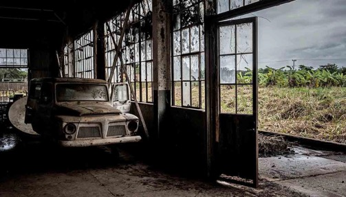
CHUTE DU PRIX DU CAOUTCHOUC (£/kg)
Les plantations de MalaisieWickham (1876) : 70 000 graines au Kew Gardens → Malaisie, Ceylan, Java. Caoutchouc cultivé 10× moins cher. Fin du monopole en 5 ans.
Crise sociale immédiateMilliers de chômeurs à Iquitos, faillites, bateaux à l'arrêt. Les indigènes rescapés retournent en forêt — structures brisées.
Conséquences à long termeTraumatismes Huitoto, Bora, Ocaina sur 3 générations. Perte de territoires, langues, rites. Dépopulation permanente.
Un second boom (1942–45)Le Japon occupe la Malaisie → les États-Unis relancent l'extraction (« soldats du caoutchouc »). Les abus reprennent brièvement.
03 · L'Ère du Caoutchouc
Carlos Fitzcarrald — le cauchero, l'isthme et la légende
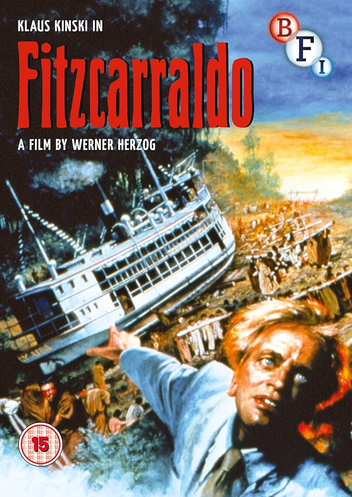
1862–1897
métis péruvien-brésilien, né à San Luis
1893
isthme Ucayali–Madre de Dios (portage 18 km)
Un cauchero ambitieuxBaron du caoutchouc contrôlant l'Ucayali et le Madre de Dios. En 1893, il fait porter un vapeur de 30 t à dos d'homme sur l'isthme.
La clé d'un empireLa liaison ouvre des millions d'hectares à l'extraction. Travail forcé imposé aux Shipibo, Matsigenka, Yine. Brutal mais charismatique.
Mort sur l'Urubamba (1897)Noyé à 35 ans dans le naufrage de son bateau. Devient une figure mythique — qui inspirera Herzog 85 ans plus tard.
Ce que Herzog a transforméHerzog reprend le geste (bateau porté par-dessus la montagne) mais en fait un rêveur d'opéra — la fiction efface la violence réelle.
03 · L'Ère du Caoutchouc
Werner Herzog — Aguirre (1972) et Fitzcarraldo (1982)
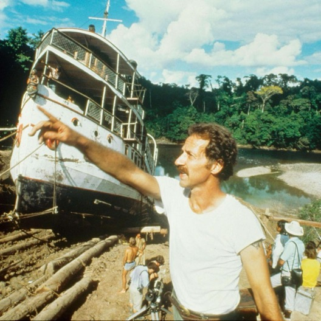
« Je voulais faire un film sur la nature de l'obsession humaine — le fleuve devait être réel. »
Werner Herzog, Burden of Dreams (Les Blank, 1982)
Aguirre, la colère de Dieu (1972)Tourné au Pérou en 5 semaines avec Kinski. Vision hallucinatoire d'une expédition perdant la raison. Film culte, restauré en 4K (2019).
Fitzcarraldo (1982)Un vapeur de 320 t tiré sur une colline sans effets spéciaux, avec des Machiguenga. Production chaotique (5 ans), Kinski menaçant.
Burden of DreamsLe documentaire de Les Blank (1982) capte la folie du projet. « Il n'y a pas d'harmonie ici — que la lutte pour la survie. »
Impact sur l'imaginaireAmazonie comme espace de démesure et de folie. Réalisme cru — mais les peuples indigènes réduits au décor.
04
Partie 04
L'Amazonie contemporaine
« La conquête n'est pas terminée. Elle continue — sous une autre forme, avec d'autres outils, mais avec la même logique. »
04 · L'Amazonie contemporaine
La guerre Pérou–Équateur — deux conflits (1941 et 1995)
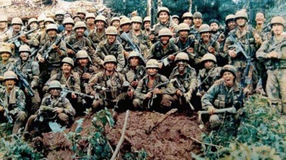
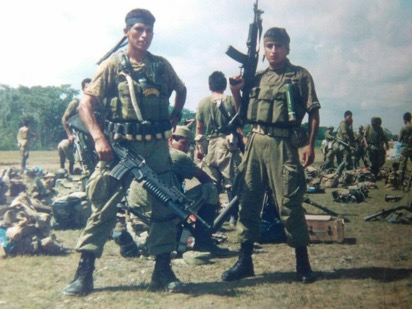
1941
Guerre de l'Oriente — Protocole de Rio (1942)
1995
Guerre de Cenepa — 34 jours, ~500 morts
Origines colonialesFrontière jamais tracée depuis l'indépendance. La Real Cédula de 1563 attribuait l'Amazonie à Quito — l'Équateur revendique l'accès au fleuve.
1941 et le Protocole de RioLe Pérou envahit l'Oriente équatorien. L'Équateur perd ~200 000 km². Protocole de Rio (1942) garanti par É.-U., Brésil, Argentine, Chili.
La guerre de Cenepa (1995)L'Équateur occupe des positions dans la vallée du Cenepa. 34 jours de combats en jungle. Cessez-le-feu sous pression des garants.
Peuples pris en étauCenepa = territoire ancestral Awajún et Wampis (côté péruvien), Shuar (côté équatorien). Guerres menées sur leurs terres sans consultation.
04 · L'Amazonie contemporaine
Le Traité de Brasilia (1998) — paix, pétrole et enjeux indigènes
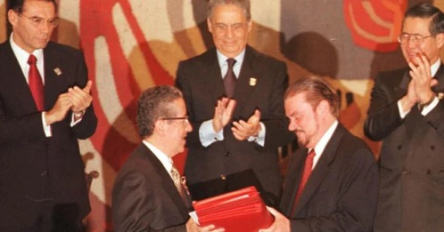
« Aujourd'hui, nos deux pays renoncent pour toujours à la guerre. La frontière trace un espace de coopération, non de conflit. »
Jamil Mahuad, président de l'Équateur, Brasilia, 26 oct. 1998
Un accord de paix globalFixe la frontière selon le Protocole de Rio (1942). L'Équateur obtient 1 km² à Tiwinza en propriété privée, non en souveraineté.
L'enjeu pétrolierLa zone chevauche le bassin de l'Oriente et les concessions du Loreto. Accords de co-exploitation et commerce transfrontalier.
Awajún et Wampis ignorésIls occupent les deux côtés depuis des millénaires. Traité négocié sans consultation — familles divisées, besoin de passeports.
Une paix solide mais fragileRelations normales depuis 1998, projets communs (IIRSA). Mais les communautés frontalières restent dans une zone grise juridique.
04 · L'Amazonie contemporaine
Pétrole, coca et violence (1970–1990) — la colonisation interne
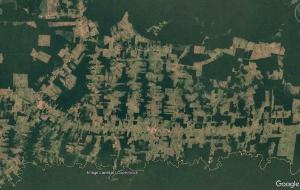
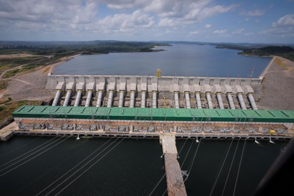
« La colonisation de l'Amazonie… a été orchestrée par les États latino-américains eux-mêmes comme politique délibérée. »
Barre (1983) ; Chirif & García Hierro, Marcando territorio (2007)
La transamazonienne (1972)Décret militaire : 5 400 km percés — « intégrer pour ne pas livrer ». Peuples expulsés sans consultation. Le Pérou ouvre sa Marginal de la Selva.
La ruée pétrolièreOccidental Petroleum (1971) et Petroperú exploitent le Loreto. L'oléoduc (1977) traverse 35 rivières. Déversements sans remédiation.
Le Sentier LumineuxDès 1980 en forêt haute. Les Asháninka premières victimes : ~5 000 morts, 10 000 déplacés (CVR 2003). L'armée confond indigènes et insurgés.
La guerre à la drogueLa coca explose : le Huallaga devient un enjeu géopolitique (DEA, rondas, narcos). Violence triple : État, guérillas, cartels.
04 · L'Amazonie contemporaine
Belo Monte — le plus grand chantier hydroélectrique (2011–2019)
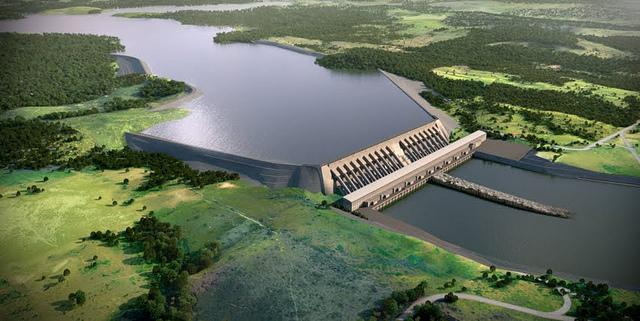
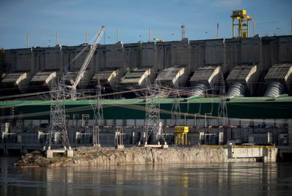
11 233 MW
3ᵉ centrale hydroélectrique du monde
~$18 Mds
coût final (+375 % vs 2010)
Un projet vieux de 40 ansÉtudié dès 1975 sous la dictature. Bloqué en 1989 (Raoni et Sting). Relancé sous Lula (2005), approuvé en 2010 malgré les protestations.
Norte EnergiaConsortium public-privé (Eletrobrás, Chesf, fonds de pension) + Odebrecht, Camargo Corrêa, Andrade Gutierrez. Épicentre de Lava Jato.
Le XinguAffluent majeur (2 600 km), +600 espèces de poissons. La « Volta Grande » — cœur écologique — est partiellement asséchée.
L'énergie contre l'écologiePrésenté comme nécessité nationale. Mais la centrale ne fonctionne qu'à 20–30 % en saison sèche : projections illusoires.
04 · L'Amazonie contemporaine
La zone inondée — forêt, biodiversité et populations déplacées
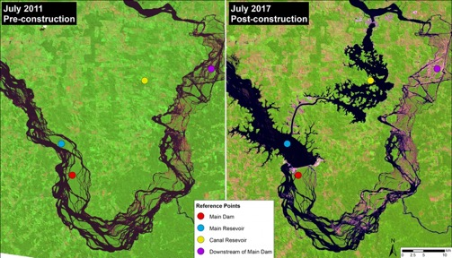
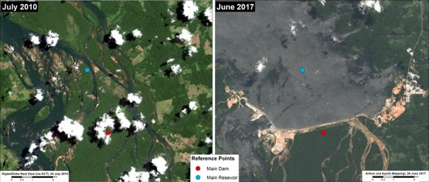
« Belo Monte ne noiera pas seulement la forêt. Il noiera notre mémoire, nos morts, notre vie. Nous ne partirons pas. »
Cacique Raoni Metuktire, Tribunal International de Belo Monte (2014)
500 km² inondésForêt en igapó et várzea à biodiversité exceptionnelle. La Volta Grande (100 km) réduite à 20 % de son débit en saison sèche.
20 000 à 40 000 déplacésChiffres contestés (Norte Energia vs MPF). Indemnisations insuffisantes : logements médiocres en périphérie d'Altamira, sans activité.
Peuples du XinguJuruna, Araweté, Arara, Xipaya, Kuruaya. La chute du débit détruit les poissons migrateurs. Le CLPE jamais validé.
Altamira en criseDe 100 000 à +160 000 habitants. Explosion de la violence, de la prostitution (dont enfantine), du trafic. Services publics effondrés.
04 · L'Amazonie contemporaine
Corruption et Lava Jato — Belo Monte au cœur du scandale Odebrecht
$11 Mds
prêts du BNDES à Norte Energia
$788 M
pots-de-vin Odebrecht (2016)
Le cartel du BTPOdebrecht, Camargo Corrêa, Andrade Gutierrez se répartissent les marchés via ententes illicites. Marcelo Odebrecht condamné en 2016.
Le BNDES comme vecteur+$11 Mds financés. Conditions négociées hors procédures, avec pression directe du Planalto. Plusieurs enquêtes du MPF.
Lula, Dilma et Belo MonteProjet phare des deux gouvernements malgré +20 actions du MPF. Dilma annule personnellement une suspension d'Ibama (2011).
L'accord Odebrecht-DOJ (2016)$788 M de pots-de-vin dans 12 pays sur 15 ans. Des versements liés à Belo Monte cités (Chesf, Eletronorte).
04 · L'Amazonie contemporaine
Raoni et la résistance — du concert de Sting au Tribunal (1989–2019)
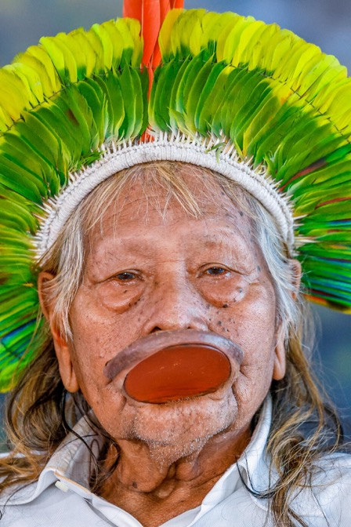
« Ils veulent tuer le Xingu. Mais le Xingu, c'est ma vie. Je mourrai avant d'accepter ça. »
Chef Raoni Metuktire, Altamira, 2011
1989 : la tournée avec StingRaoni parcourt l'Europe pour alerter sur Kararaô (futur Belo Monte). Projet suspendu, ~$2 M levés. Un premier succès du militantisme indigène.
2011 : l'occupation d'AltamiraKayapó, Juruna et Arara contestent les audiences d'Ibama. Une femme kayapó giflant l'ingénieur fait le tour du monde. Suspension annulée par Dilma.
Tribunal International (2014)Juristes et indigènes de 20 pays : Belo Monte viole le droit international (OIT 169, DNUDPI). L'État brésilien ignore le verdict.
Raoni et la CIDHEn 2020, mesures conservatoires pour les Juruna. Raoni continue sa tournée (Vatican, 2019). Couvert par Le Monde, BBC, NYT.
04 · L'Amazonie contemporaine
Belo Monte — bilan : promesses non tenues, luttes qui continuent
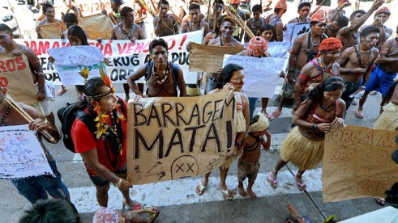
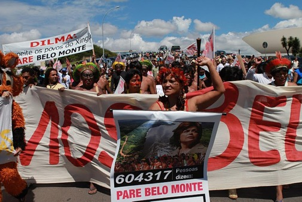
~40 %
capacité réelle en saison sèche
3 900+
homicides à Altamira (2015–19)
Des promesses énergétiques non tenuesFearnside (INPA) : 40–45 % de la capacité, parfois <20 % en saison sèche. Loin des 4 500 MW garantis, au prix d'une destruction majeure.
Ville la plus violente du BrésilIPEA 2019 : 136 homicides / 100 000 hab. Prostitution enfantine documentée, liée à l'afflux de travailleurs et à la déstructuration.
Compensations non respectées40 conditions (santé indigène, reforestation, logements). En 2020, le MPF constate leur non-respect majoritaire. Procès en cours.
Nouvelle menace : Belo SunMine d'or à ciel ouvert à 10 km en aval, dans la Volta Grande. La lutte du Xingu devient un symbole mondial anti-extractiviste.
04 · L'Amazonie contemporaine
Les mouvements indigènes — identité, droits et résistance
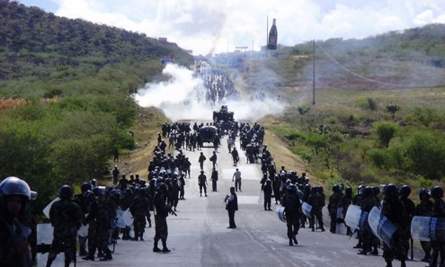
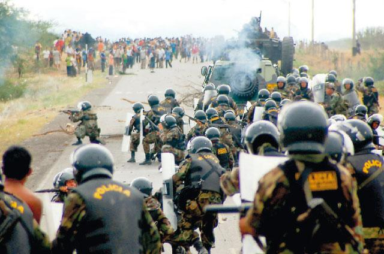
1974
AIDESEP — +60 peuples
2007
Déclaration ONU (DNUDPI)
Le Baguazo — 5 juin 2009García ouvre les territoires aux concessions. Awajún et Wampis bloquent les routes. La police tire : 33 morts. Événement fondateur.
L'efficacité des territoires titrésWalker (2014), Schleicher (2017) : 3 à 5× moins de déforestation. La reconnaissance foncière est la meilleure politique de conservation.
Peuples en isolement volontaireAu Pérou : 5 000+ personnes de 20+ groupes (Mashco-Piro, Isconahua). Menacés par les pétroliers et narcotrafiquants.
Organisations contemporainesAIDESEP, ONAMIAP (femmes), FENAMAD, FECONAU — réseau portant les cas devant la Cour interaméricaine.
04 · L'Amazonie contemporaine
Fujimori, stérilisations forcées et colonisation interne
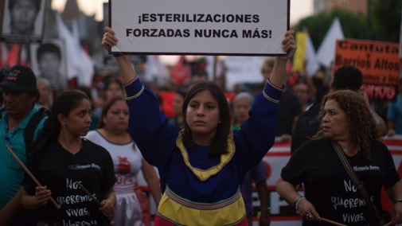
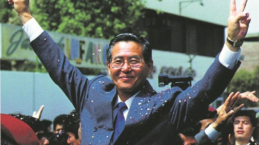
« Ces femmes n'étaient pas malades. Elles étaient indigènes, pauvres, rurales. C'était ça, leur crime. »
Hilaria Supa, députée quechua, survivante, Congrès (2002)
Le Programme PNSRPF (1996–2000)« Santé reproductive » avec objectifs chiffrés de stérilisation. Médecins ruraux sous quotas mensuels, sous peine de sanctions.
272 000 à 350 000 victimesMajoritairement quechuas, aymaras et amazoniennes. « Brigades mobiles » ciblant les communautés. « Ligature » traduite en « vaccination ».
La colonisation interneL'État a traité l'Amazonie comme un espace « à civiliser ». Dépeupler = libérer des terres. Le corps des femmes et la terre, même système.
Impunité partielleFujimori condamné en 2009 (crimes contre l'humanité), pas pour les stérilisations. Dossier rouvert en 2022. Cas devant la CIDH.
05
Partie 05
Archéologie de l'Amazonie
« Beneath the forest floor lies the evidence of a sophisticated civilization — terra preta, geoglyphs, and the ghost of a vanished world. »
05 · Archéologie de l'Amazonie
La civilisation Casarabe — révélée par LIDAR (Bolivie, 2022)
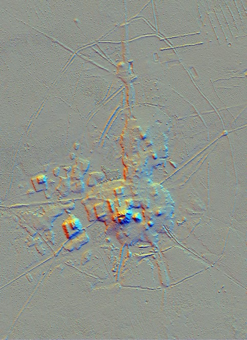
~2 500 km²
réseau urbain (500–900 apr. J.-C.)
Découverte par LIDAR (2022)Heiko Prumers (DAI Berlin), Nature 2022 : 26 sites urbains reliés par routes surélevées et canaux — invisibles sous la canopée.
Cotoca, capitale probableDeux pyramides tronquées (22 m), mur périmétrique, place centrale, routes végétalisées. Architecture planifiée, non nomade.
Ce que cela invalideLe « vide amazonien » de Meggers (1971). La Casarabe — contemporaine de l'empire carolingien — démontre le contraire.
Fouilles en cours (2023–25)Dépôts céramiques, hiérarchie urbaine à 3 niveaux. Les habitants sont probablement les ancêtres des Baure actuels.
Source : Prumers et al., Nature, 2022
05 · Archéologie de l'Amazonie
L'île de Marajó — mounds, céramique et société complexe
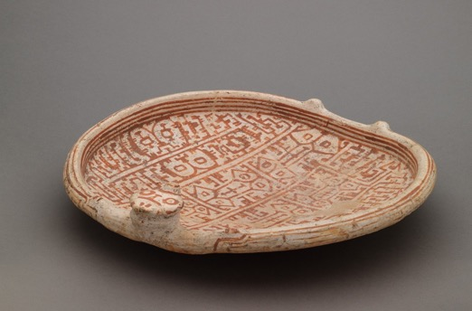
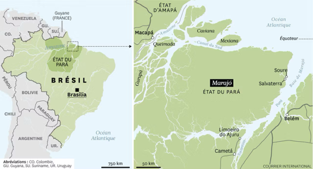
« Une des céramiques précolombiennes les plus élaborées d'Amérique — polychromie, figurines, urnes funéraires d'une société hiérarchisée sans écriture. »
Denise Schaan, Univ. Federal do Pará (2004)
Les mounds (tesos)+400 tertres construits à la main pour dépasser les crues. Certains atteignent 7 m de haut pour 250 m de long — organisation collective séculaire.
La céramique MarajóaraBetty Meggers niait son origine locale (Amazonie « trop pauvre »). Réfuté : ADN et stratigraphie confirment un développement autonome.
Inégalités documentablesAccès différencié aux objets de prestige, résidences variées, funérailles hiérarchisées — signature d'élites héréditaires.
Abandon et mémoireEffondrement vers 1300 apr. J.-C. (migrations Tupi). Les Aruanã gardent une tradition orale liée aux tesos.
05 · Archéologie de l'Amazonie
Les Llanos de Mojos — ingénierie hydraulique précolombienne

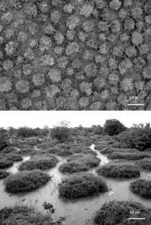
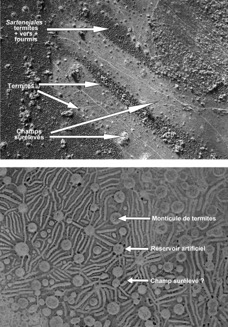
~100 000 km²
de traces hydrauliques
200 apr. J.-C.
premiers camellones
Les champs surélevés (camellones)Plates-formes séparées par des canaux : irrigation en saison sèche, drainage en saison des pluies. Erickson : de quoi nourrir des millions.
Lacs artificiels et forêts-îlesRoutes surélevées (causeways), lacs de pêche, îlots de palmiers plantés — un territoire intégralement anthropogène.
Abandon et réactivationAbandonnés après la conquête et les épidémies. Réactivés partiellement par des communautés Beni au XXIᵉ s. face au climat.
Confirmation LIDAR (2018–22)Villages sur tertres (lomas) reliés par causeways, hydraulique à l'échelle régionale. Comparable à la Casarabe en densité.
Source : Clark Erickson (Univ. of Pennsylvania), 2000
05 · Archéologie de l'Amazonie
Gran Pajatén — la cité perdue de la montaña (Chachapoyas)
« Une des découvertes archéologiques les plus importantes du Pérou — des édifices circulaires ornés de frises zoomorphes à 2 850 m d'altitude. »
Gene Savoy, expédition américaine, 1965
Site & culture ChachapoyasCulture pré-inca (800–1470) — « peuple des nuages ». ~30 édifices circulaires (7–12 m) à 2 850 m sur le rio Montecristo.
Architecture ornée uniqueFrises sculptées : condors, serpents, figures humaines. Sans mortier, murs de 5–7 m. Centre cérémoniel et administratif.
Les sarcophages de KarajíaSarcophages anthropomorphes de 2,5 m plantés à pic dans les falaises. Corps en position fœtale — ancêtres-gardiens.
Intégration inca (1470)Résistance puis soumission sous Túpac Yupanqui. Les Chachapoyas fournissent des gardes personnels au Sapa Inca à Cuzco.